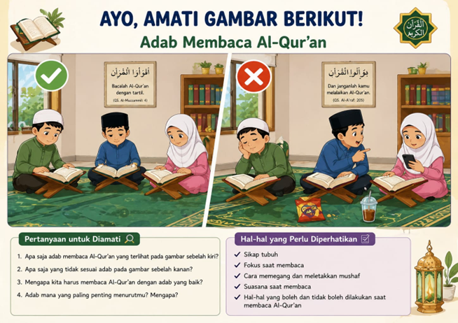

✦ ✦ ✦
MARI BELAJAR
ADAB
Adab Membaca Al-Qur'an
dibuat oleh : Moh. Ainun Najib
✦ MULAI ✦
UIN SUNAN
KUDUS
MTs Nasyrul
Ulum
Pilih Materi
Adab Membaca Al-Qur'an
📖 Pengertian
🌿 Adab
✨ Hikmah
💬 Diskusi
🎮 Game
Judul
✕
✕

Tekan ESC atau ✕ untuk menutup